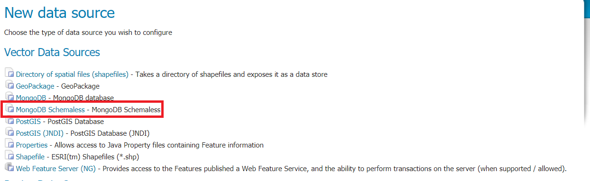

Installing the Schemaless Mongo module¶
Download https://build.geoserver.org/geoserver/2.19.x/community-latest/geoserver-2.19.x-SNAPSHOT-mongodb-schemaless-plugin.zip nightly GeoServer community module.
Warning
Verify that the version number in the filename corresponds to the version of GeoServer you are running (for example geoserver-2.19.2-schemaless-features-plugin.zip above).
Extract the contents of the archive into the
WEB-INF/libdirectory of the GeoServer installation.On restart the
MongoDB Schemalessvector source option will be available from theNew Data Sourcepage:

Previous: Schemaless Features Plugin